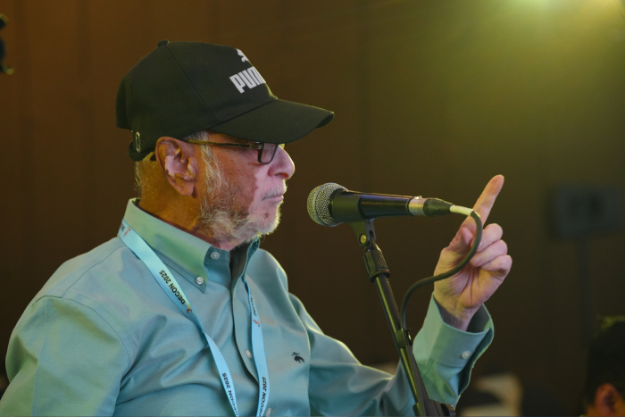

Diabetes & metabolism
Updates, cases, precision diabetes and comprehensive care.
Evidence into practice13th International Conference
One focused meeting for clinicians working across diabetes, endocrinology, maternal medicine and related specialties.
Programme at a glance
Two days of expert lectures, workshops, clinical cases, Gold Medal Orations, oral presentations and posters.
Updates, cases, precision diabetes and comprehensive care.
Evidence into practiceThyroid and endocrine disorders, diagnostic reasoning and management.
Clinical problem solvingCardiovascular, infectious and internal medicine perspectives.
Connected careMetabolic and endocrine care across pregnancy and beyond.
Across the life course
National & international facultyFaculty
Featuring Dr Dina Shrestha, Dr Punith Kempegowda, Dr V Mohan, Dr Anuj Maheswari and specialists across endocrinology, diabetology, internal medicine and allied fields.
View all facultyShare your work
Submit your work for oral or poster presentation and bring new clinical evidence to the DECON community.
Delegate planning
Plan your conference visit with venue, city, travel and accommodation information in one place.
Le Méridien Coimbatore
Connected by air, rail and road
19 accommodation options
Complete conference information
Browse the full programme scope, faculty, community initiatives, exhibitor guidance, accommodation, FAQs and contact details.
Open conference guide